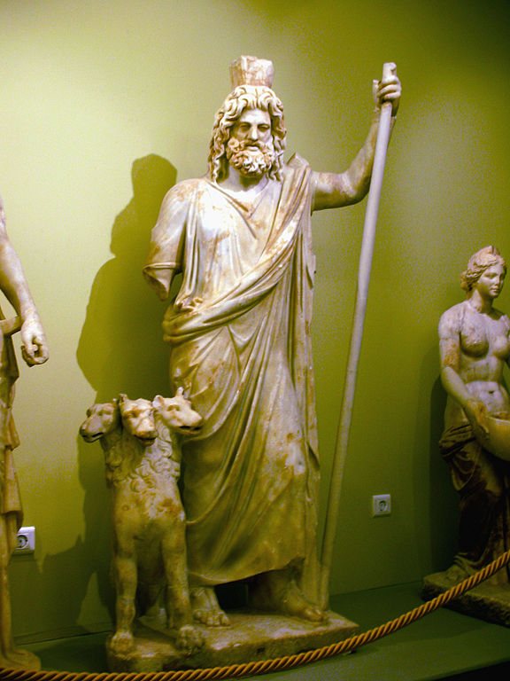

Mythology | Egypt
Syncretism in Ancient Egypt
Published: Jan 15 2021
How Ancient Egyptian gods merged with other gods in a process called 'Syncretism'.
Introduction
In ancient times, religion was strikingly different from the common religions we know in the present day. One of the biggest differences is that the most predominant ancient religions are polytheistic: they worship more than one god.
When there already is a multitude of gods (polytheism), it becomes easier to add another one, or to change a god that is already known. But what happens when a god from an entirely different culture finds its way into Egyptian religion? That is when Syncretism comes into play.
Syncretism = the fusion of elements from 2 different cultures
Examples of Syncretism ~ Serapis
Syncretism was quite a common process throughout anitquity - it occured in Ancient Egypt (3500 - 30 BCE), Ancient Greece (800 - 30 BCE) ánd Ancient Rome (510 BCE - 480 AD). We could discuss the phenomenon for each of these eras, but since our weekly theme is Ancient Egypt, we focus on this period in this article.
The prime example of syncrety in Ancient Egypt is the god Serapis. Here we see him in the form of a statue: 
Serapis is the mixture of the Egyptian God Osiris and the Greek God Pluto. If you look well, you may notice:
- His Egyptian royal head ornament (Egyptian)
- The typical Greek clothing (Greek)
- The mythical dog Cerberos (Greek)
Examples of Syncretism ~ Isis
The goddess Isis is another great example of Syncretism. She has archetypal features (recurring themes found in religions all across the world). For Isis, these archetypes are as follows:- the caring mother (of Horus)
- the loyal wife (of Osiris)
- the healer (she restored Osiris after Seth cut him into pieces)
- The royal
Isis' archetypes are commonly found in other cultures. In fact, I can't think of any ancient religion that is devoid of these archetypes. This overlap made her prone to be syncretized with local gods. What follows are visual examples:
The Macedonian ruler of Egypt Ptolemy Soter (300 BCE) meets Isis and Osiris like the Pharaohs used to do. It illustrates how Ptolemy used syncretism to improve his legitimacy as ruler of Egypt (the Ptolemaic kingdom).
Isis with a serpentine body from the time that Rome ruled Egypt (200 CE). The serpent stood for fertility and a legitimate claim of the land that people dwell on. Such a claim is a 'chtonic claim'. Isis was rather popular in Rome itself too; there was a house of worship in the ancient capital.
Above is the Greek goddess of the underworld Persephone (2nd century CE). But, she is depicted as Isis.
Conclusion
Through two examples we discovered how Ancient Egyptian religion tied in to contemporary cultures. Through these illustratations, we have come to realize that gods were 'appropriated' and merged into the Ancient Greek, Ancient Macedonian and Ancient Roman cultures.